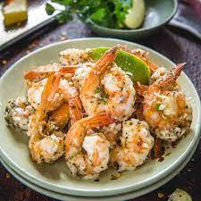

Garlic Parmesean Shrimp

Description
What goes better with a creamy bowl of mushroom risotto than Garlic Parmesean Shrimp?
These colossal shrimp have been crusted in garlic parmesean goodness and baked until just cooked.
Packed with flavor and fresh from the sea, these shellfish with be sure to delight your dinner guests.
Follow along with the recipe below to learn how to make Garlic Parmesean Shrimp thats sure to impress.
Ingredients
- 2 lbs Jumbo, or larger, Shrimp
- 1/2 Cup Butter, melted
- 2 Tbsp Olive Oil
- 1/3 Cup White Wine
- 2 Tbsp Lemon Juice
- 1 Tbsp Garlic Powder
- 1 Tsp Paprika
- 1-2 tsp Parsley, finely minced
- 1/2 cup Grated Parmesean Cheese
- Lemon slices
Steps
- Preheat oven to 400F.
- Butterfly, shell, and de-vein Shrimp, but leave tails attached.
- Whisk together Parmesean Cheese, Paprika, and Parsley
- In a small bowl, mix Butter, Olive Oil, White Wine, Lemon Juice, and Garlic Powder.
- Arrange Shrimp in a single layer on a baking sheet. Baste shrimp with liquid, then sprinkle with parmesean mixture.
- Flip shrimp over and repeat the previous step.
- Bake for 10-15 minutes or until shrimp are just cooked.
- Serve warm with Lemon Slices.